数据库系统概念–学习笔记(包含数据库系统概念书籍)
Lesson1 数据库基本概述
NO1.1 数据库管理系统
数据库和管理这个数据库的程序，我们把这两者统称为数据库管理系统。
- 数据库管理系统由一个数据库和一个管理该数据库的程序组成。
- 数据库，顾名思义，就是存放了大量数据的仓库。
如，我们常见的银行系统(用来存储客户信息等)、大学的学生系统(用来存储学生信息等)、机票系统(用来存储订票和航班信息等)，都有数据库的身影； - 管理数据库的程序，称为数据库管理系统，即我们常说的DBMS。常见的DBMS有：MySQL、SQL Server、ORacle、PostgreSQL、DB2等等。
- 数据库，顾名思义，就是存放了大量数据的仓库。
NO1.2 数据模型
数据模型是数据库的基础。这句话怎么理解呢？简单的说，就是一个存放数据的仓库，你要存放的数据不能是凭空捏造的吧？(因为凭空捏造的数据没什么意义，用不到现实世界中去呀)，既然不能凭空捏造而来，那么我们就只能从现实世界里获取了呀，即数据模型就是将我们现实世界客观的事物抽象成一个能放到数据库中的模型，而这个模型拥有一些属性。如，客观世界存在的人，我们把他抽象成一个人的模型，那么它可能拥有名字、年龄、性别等等这些数据，为什么会有这些数据呢？是因为客观世界存在的人就有这些属性。
数据模型被分为了以下几种：
关系模型：该模型是使用最广泛的数据模型，当今大量的数据库都采用了这种关系模型；
实体-联系模型：该模型被广泛用于数据库的设计；
基于对象的数据模型：该模型结合了面向对象的数据模型和关系模型的特征；
半结构化数据模型；
层次数据模型；
网状数据模型。
NO1.3 数据抽象
所谓的数据抽象，其实就是把数据库更加的形象化，相当于把数据库当成现实世界中一个真正存在的大型仓库，只不过这个仓库放的不是别的东西，而是我们要查找的数据。
为了简化用户与数据库的交互，数据库被分成了三个层次的抽象：
物理层：这是最低层次的抽象，讲的是数据在底层是怎么存储的。就如同你要修建一座仓库，该用什么材料，做成什么样子；
逻辑层：比物理层稍微高一点的抽象，讲的是数据库里存储的是什么数据以及数据间都有什么样的关系。相当于仓库修建好了，你要往里面放什么样的东西，以及该怎么放。
视图层：这是最高层次的抽象，其实就是我们用户所看到的数据库的一部分。仓库修建好了，里面也放东西了，我们用户根据需求去找我们要的东西，当然要给我们用户一个能看到的“货架”。
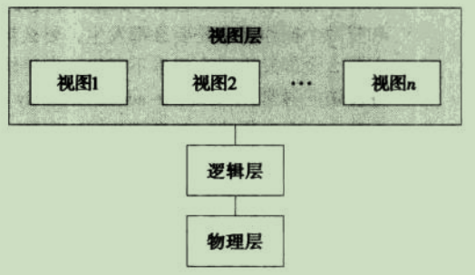
NO1.4 数据库的三级模式
- 根据三个层次的抽象，数据库又被分为三个模式：
- 物理模式(即内模式)：简单理解为，数据库的二进制信息最终还是要存储到存储设备上，内模式就是考虑用什么算法储存这些数据，储存的数据是否要压缩或者加密等等。数据库只能有一个内模式；
- 逻辑模式(即模式)：其实，模式就是数据库把所有的数据设计成我们用户能看 明白的样式。如，MySQL的模式，就是表；数据库只能有一个模式；
- 子模式(即外模式或用户模式)：通俗的讲，外模式就是数据库实际给我们用户看到的样式，是数据库查询产生的产物。外模式是模式的子集，数据库可以有多个外模式。
NO1.5 数据库语言
数据库提供了用于定义模式(即数据该怎么放)的DDL语言，以及查询和更新数据库所使用的DML语言。
- 数据定义语言(DDL)：用于定义数据库模式的语言。DDL的主要语句有：
- CREATE语句：可以创建数据库和数据库的一些对象；
- DROP语句：可以删除数据模式、索引、触发程序、条件约束以及数据表的权限等；
- ALTER语句：修改数据模式的定义及属性。
- 数据操纵语言(DML)，即能够对数据库中的数据进行增删改查的语言。DML通常分为过程化DML和非过程化DML：过程化DML要求用户不仅要知道自己想要什么数据，且还要知道怎么获得这些数据；而非过程化DML只要求用户知道自己想要什么数据就可以了，所以这比过程化DML要易学易用。DML的主要语句有：
- insert语句：向数据表张插入记录；
- delete语句：删除数据表中的记录；
- UPDATE语句：修改表中的记录。
NO1.6 关系型数据库
我们常说的关系型数据库，就是用表作为模式的数据库。
- 关系数据库基于关系模型，使用一系列表来表示数据之间的关系。每个表有多个列，每个列有唯一的名称。关系数据库也包括DDL和DML。关系数据库的SQL查询语言是非过程化的，即只要知道需要什么样的数据，而不用考虑怎么获得这些数据。
NO1.7 数据库设计
数据库的创建流程需要经历多个步骤。其中我们常用E-R模型来辅助设计数据库。
数据库设计流程图：
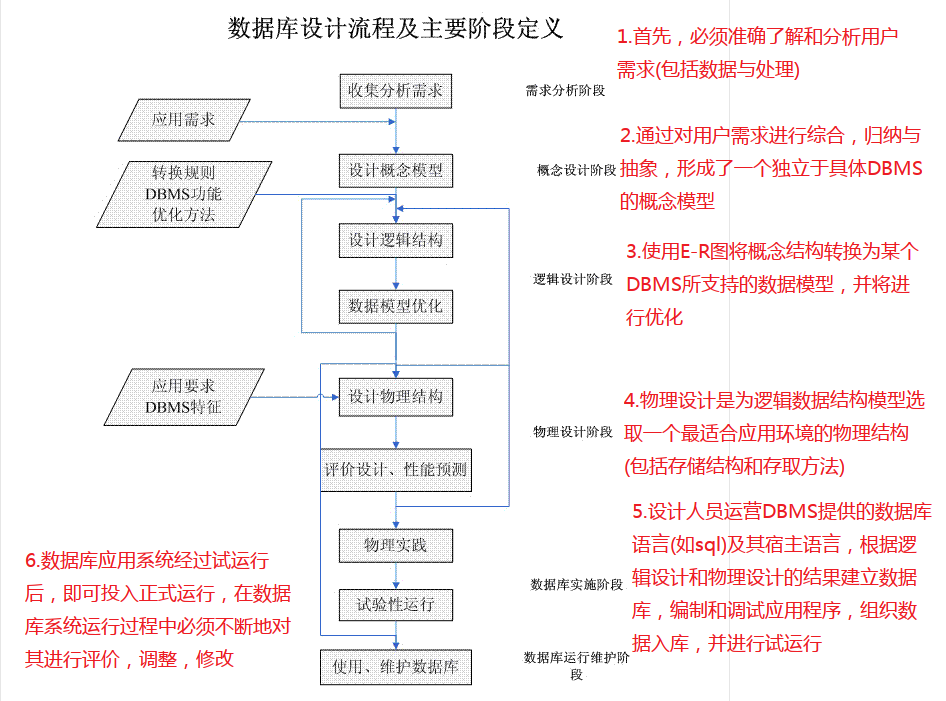
- E-R模型的基本元素是：实体、联系和属性。
- 实体：现实生活中任何可以被认知，区分的事物；
- 联系：实体之间的关系，可以一对一、一对多、多对多；
- 属性：实体的某一特性称为属性。
NO1.8 数据库系统功能部件
数据库系统划分为不同的模块，每个模块完成整个系统的一个功能。
- 数据库系统的功能部件大致可分为两大部分：
- 存储管理器：负责数据库中数据的存储、检索和更新。
- 查询处理部件：该部件还分为了DDL解释器(用于解释DDL语句并记录到数据字典中)、DML解释器(用于将DML语句翻译成一个执行方案、以及查询引擎能够理解的低级指令)、查询执行引擎(用于执行由DML解释器产生的低级指令)。
NO1.9 事务的特性
所谓的事务，就是指一个逻辑单元执行的一系列操作。如，我去超市买东西，付钱这个操作就是一个逻辑单元所要执行的一个系列操作：即我这里扣钱，商家那里得到钱，必须同时满足；只满足一方，都不叫事务。
- 事务四大特性：
- 原子性(ATOmicity)，是指事务包含的所有操作要么全部成功，要么全部失败回滚，因此事务的操作如果成功就必须要完全应用到数据库，如果操作失败则不能对数据库有任何影响。
- 一致性(Consistency)，是指事务必须使数据库从一个一致性状态变换到另一个一致性状态，也就是说一个事务执行之前和执行之后都必须处于一致性状态；拿转账来说，假设用户A和用户B两者的钱加起来一共是5000，那么不管A和B之间如何转账，转几次账，事务结束后两个用户的钱相加起来应该还得是5000，这就是事务的一致性。
- 隔离性(Isolation)，是指一个事务的执行不能被其他事务干扰，比如操作同一张表时，数据库会为每一个用户开启事务，而每个事务不能被其他事务的操作所干扰，即多个并发事务之间要相互隔离；即要达到这么一种效果：对于任意两个并发的事务T1和T2，在事务T1看来，T2要么在T1开始之前就已经结束，要么在T1结束之后才开始，这样每个事务都感觉不到有其他事务在并发地执行。
- 持久性(Durability)，是指一个事务一旦被提交了，那么对数据库中的数据的改变就是永久性的，即便是在数据库系统遇到故障的情况下也不会丢失提交事务的操作。
Lesson2 关系模型介绍
NO2.1 关系数据库的结构
关系数据库由许多个表构成。
- 关系数据库的一些概念：
- 关系型数据库中都是表，且每个表都有唯一的名字；
- 表又称为关系，表的行称为元组，表的列称为属性，每个属性都有一个取值范围，我们称为域；
- NULL值出现在域中，表示值未知或不存在，但是我们要尽量避免NULL，因为这会给数据库的访问和更新带来很多困难。
NO2.2 码
我们用表的某个属性来区分不同的记录。
- 超码(就是主键的意思)：是指一个或多个属性的组合，其实就是一个或多个列的值的组合，而形成的复合列的意思。超码用来标识关系中唯一的一个元组。
- 候选码：是指最小的超码。超码可以唯一标识一条记录，那么只要包含了超码的集合，也是超码，但如果这样的话，超码的范围就太广了(就是你搞那么多的超码，没什么用处)，所以我们就拿最小的那个超码就行了，而这个最小的超码就是候选码。
如，student表中，有id、name、age三个属性，其中id属性可以作为超码来标识唯一的元组，那么id+name可以是超码，id+age可以是超码，id+name+age也可以是超码，但是这三种超码，你不觉得没什么用吗，其实只要用一个id当做超码就可以了，因为一个id就可以区分每一个元组了，就没必要用其他另外的三种。
- 主码：就是用来标识被我们选中的候选码(因为有时候表中可能不止一个属性可以用来唯一标识一个元组。
如，people表有id，name，age,id_card属性，其中id和ic_card都可以作为候选码，这时我们随意选择一个作为主码即可)。主码一般放在表的最前面，且必须是从不或极少变化的属性。
- 外码：指的是如果一个表中，包括了另一个表中的主码，那么，这个外来的主码就称为外码。
如，A表中除了自身的主码外，还包含了B表中主码，那么A表中包含的另一个主码，就称为外码；
Lesson3 SQL
NO3.1 SQL查询语言概览
SQL最早的版本是由IBM开发的，它最初被叫做Sequel，后来变成了SQL(即结构化查询语言)。1986年发布了SQL标准：SQL-86，最新的版本是SQL:2008。
- SQL语言主要有以下几个部分：
- 数据定义语言(DDL)：DDL使我们有能力创建或删除关系，也可以定义索引，规定关系之间的链接，以及设置关系的约束等等；
- 数据操作语言(DML)：DML供用户实现对数据的新增、删除、更新、查询等操作；
- 完整性：就是指对表设置约束，DDL中包括了这个功能。
如，表的某些字段不能为NULL、是否唯一等等； - 视图定义：即根据表的查询结果创建视图，DDL中包括了这个功能；常使用的语句为CREATE view….；
- 事务控制：即定义事务的开始和结束的命令，SQL中包括了这个功能；
- 嵌入式SQL和动态SQL：即定义嵌入式SQL和动态SQL如何嵌入到通用编程语言中；
- 授权：定义对表的和视图的访问权限的命令，DDL中包括了这个功能；
NO3.2 SQL数据定义
数据库中的数据该用什么样的形式存放，必须由数据定义语言(DDL)指定给系统。
- SQL标准支持多种固有的基本数据类型，常见的有：
char(size)：固定长度的字符串(可包含字母、数字以及特殊字符)，不足长度的字符会用空格来填满。size指定字符串的长度，最多255个字符；varchar(size)：可变长度的字符串(可包含字母、数字以及特殊字符)。size指定字符串的最大长度，最多255个字符；注意：如果值的长度大于255，则被转换为TEXT类型；推荐使用varchar；int(size)：数值类型，占用4个字节，范围是-2147483648到2147483647。size指定最大位数；smallint(size)：数值类型，占用2个字节，范围是-32768到32767。size指定最大位数；numeric(m,n)：数值类型，占用m个字节，表示的是一个长度为m的数，小数位有n个(即m表示数字总长度，n表示小数位)；double(size,d)：双精度浮点数，d参数表示小数点后有多少位；float(size,d)：单精度浮点数，d参数表示小数点后有多少位。
基本表的定义和部分完整性约束；
创建表；
基本语法格式：
CREATE TABLE 表名称( 字段名1 数据类型(长度), 字段名2 数据类型(长度), .......， ) 如： CREATE TABLE person( LAStName varchar(30), Age int(3) )
删除表；
基本语法格式：
DROP TABLE 表名称; 如：DROP TABLE person;
修改表；
基本语法格式：
向表中添加字段：ALTER TABLE 表名 ADD 新字段名称 新字段类型 COMMENT [解释] [插入字段的位置]; 如：ALTER TABLE user ADD age int COMMENT '年龄' after birthday; 修改字段的类型：ALTER TABLE 表名 MODIFY 字段 新字段类型; 如：ALTER TABLE user MODIFY name varchar(32); 删除字段：ALTER TABLE 表名 DROP 新字段名称; 如：ALTER TABLE user DROP pASswORd; 修改表名称：ALTER TABLE 表名 RENAME TO 新名称; 如：ALTER TABLE user RENAME TO student; 修改字段名称：ALTER TABLE 表名 CHANGE 字段名 新字段名 新字段类型; 如：ALTER TABLE user CHANGE name username varchar(15);
部分完整性约束。
主键约束：将指定的字段设置为主键，可以直接写在某个字段后面，也可以在所有字段都写完之后再声明主键也行；
基本语法格式：
字段名 数据类型 PRIMARY KEY 或 PRIMARY KEY(字段名) 如： CREATE TABLE person( id int(10) PRIMARY KEY, //直接写在某个字段后面 name varchar(25), ADDress varchar(25), //PRIMARY KEY(id) //或者在所有字段都写完之后再声明主键 )
外键约束：将指定的字段设置为外键，这个外键的值是另一个表中的主键的值；可以直接写在创建表时的的末尾，也可以在表创建完成后再添加。
基本语法格式：
FOREIGN KEY(字段名) references 另一张表的名称 (另一张表的主键) 或 ALTER TABLE 表名 ADD FOREIGN KEY 外键约束起个名称 (指定的字段名) references 另一张表的名称 (另一张表的主键); 如： CREATE TABLE person( id int (10) PRIMARY KEY, name varchar (25), ADDress varchar (25), role_id int (10), PRIMARY KEY (id), FOREIGN KEY (role_id) references Role (role_id) //在所有字段都写完之后再声明外键 ) 或 ALTER TABLE person ADD FOREIGN KEY p_r_fk (role_id) references role (role_id);
NO3.3 SQL查询的基本结构
SQL的查询基本结构由：SELECT、FROM和WHERE组成。
单表查询
定义：即只对一个表进行查询；
基本语法格式：
基本查询：SELECT 字段名 from 表名; 如：SELECT name FROM user; 使用DISTINCT去重：SELECT DISTINCT 字段名 fORm 表名; 如：SELECT DISTINCT name FROM user; WHERE条件查询，后面可跟逻辑连词AND、OR、NOT多个条件关系：SELECT 字段名 from 表名 WHERE 条件 AND 条件; 如：SELECT name FROM user WHERE id = 1 AND adress = '地球村'; 使用AS为表取表别名，也可以省略不写，直接在表名后面空格，跟上表的别名也可以：SELECT 字段名 FROM 表名 AS 表别名 WHERE 条件; 如：SELECT name FROM user AS u WHERE id = 1; 使用模糊匹配查询“%”和“_”，前者匹配任意个字符，后者匹配任意一个字符：SELECT 字段名 FROM 表名 WHERE 字段名 LIKE '模糊查询'; 如：SELECT name FROM user WHERE adress LIKE '%村'; 拓展：使用escape来定义转义字符：SELECT 字段名 FROM 表名 LIKE '\%字段名%' escape '\' ，这里使用escape对"%"进行了转义，表示模糊查询以“%字段名”开头的属性。 使用*号获取所有的列：SELECT * FROM 表名; 如：SELECT * FROM user; 使用ORDER BY来按照某一列进行排序，后面可以跟DESC(降序)、ASC(升序)，不指定的话，默认是ASC升序：SELECT 字段名 FROM 表名 WHERE 条件 ORDER BY 列名 DESC; 如：SELECT name FROM user WHERE adress = '地球村' ORDER BY age DESC; 使用BETWEEN...AND...范围限定条件：SELECT 字段名 FROM 表名 WHERE 条件 BETWEEN ... AND ...; 如：SELECT name FROM user WHERE age BETWEEN 18 AND 30;
多表查询：
使用的是natural join，我们称为自然连接。这种多表查询没有太多的意义，只是把相同的列合并成一个，所以这里了解一下就可以。
SELECT 字段名 fram 表名 natural join 另一张表名;
NO3.4 集合运算
数据库里的集合运算，一般指的是两张表的并集、交集和差集。
分别使用
union/union all、intersect、except关键字取两张表的并集、交集、差集。使用union将多个表进行拼接，会自动去掉完全相同的两行或多行，只保留一行；union all和union作用一样，只是不会去除重复行：(SELECT 字段名 FROM 表名) union (SELECT 字段名 FROM 表名) 使用intersect，取两张表的公共部分，但是MySQL中不支持该功能：(SELECT 字段名 FROM 表名) intersect (SELECT 字段名 FROM 表名) 使用except，会自动去重，并取两张表的差集，union all 且还可以在最后添加GROUP BY进行分组，但MySQL中不支持该功能： (SELECT 字段名 FROM A表) union (SELECT 字段名 FROM B表) //A表在前，则取属于A但不属于B表的记录 (SELECT 字段名 FROM B表) union (SELECT 字段名 FROM A表) //B表在前，则取属于B表但不属于A表的记录例如：
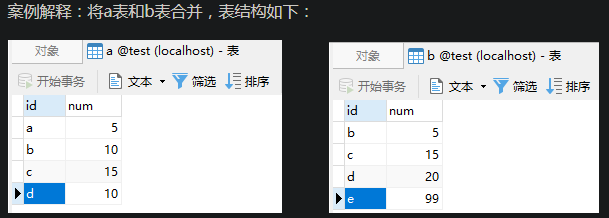
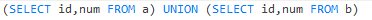
结果为：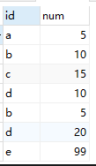
注意：union合并了id为c的记录，因为出现了两次，所以就只取了一次。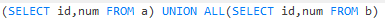
结果为：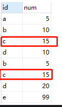
注意：union all则没有去除重复的行记录。
NO3.5 聚集函数
聚集函数返回的都是单个值。
- SQL提供了五个基本的聚集函数，聚集函数除了count()以外，其他函数都会忽略NULL(空值)。
- 平均值：
avg(列名)，只能用于数值类型； - 最小值：
min(列名)； - 最大值：
max(列名)； - 总和：
sum(列名)，只能用于数值类型； - 计数：
count(列名)。
- 平均值：
分组聚集。
使用GROUP BY进行分组：SELECT 字段名 FROM 表名 WHERE 条件 GROUP BY 字段名; 注意：还可以在分组后，再次进行筛选，使用having即可：SELECT 字段名 FROM 表名 WHERE 条件 GROUP BY 字段名 having 条件。
NO3.6 嵌套子查询
SQL还提供了嵌套子查询机制，简单讲就是将WHERE条件换成了一个SELECT句子。
子查询。
定义：其实就是将另一条SELECT-FROM-WHERE语句的结果当做查询的条件；
基本语法格式：
SELECT 字段名 FROM 表名 WHERE 条件 (SELECT 字段名 FROM 表名 WHERE 条件) 如：SELECT name FROM student WHERE id = (SELECT max(id) FROM scORe);
集合的比较：all和some/any的使用。
All(比较条件包括：>、>=、<、<=、=、<>) ：对于外查询的每一条记录，与子查询所有的记录进行比较，如果满足指定的比较条件，那么就取出外查询的这条记录，否则就不取出；注意：<>为不等于。some/any(比较条件包括：>、>=、<、<=、=、<>) ：对于外查询的每一条记录，与子查询部分的记录进行比较，如果满足指定的比较条件，那么就取出外查询的这条记录，否则就不取出。例如：
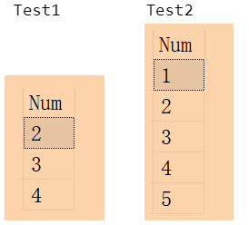
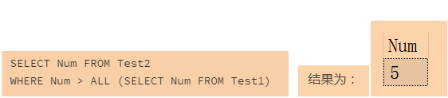
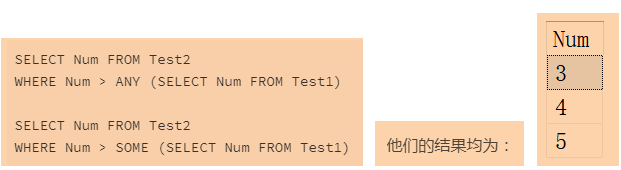
exists的使用：对于外查询中的每一条记录，都与子查询中所有记录进行比对，如果子查询中有与外查询的这条记录相符合的，就将外查询这条记录取出来。例如：
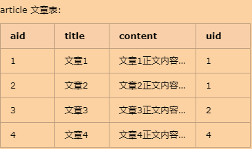
SQL：SELECT * FROM article WHERE EXISTS (SELECT * FROM user WHERE article.uid = user.uid)查询结果为：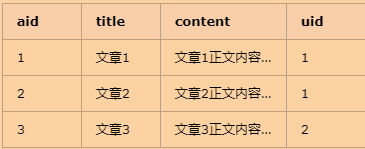
说明：首先根据外查询的语句SELECT * FROM article，可以知道，查询article表的所有内容，说白了也就是每一条记录嘛；再来看看子查询的语句SELECT * FROM user WHERE article.uid = user.uid，可以知道，要查询的是user表中uid=?的记录，那么这个?是什么呢，其实就是外查询的每一条记录中uid的值而已，也就是说，可以将外查询的每一条记录都当做是article表，而article.uid属性不就是这条记录的uid属性吗？那么我们把这条记录uid值取出来，给子查询当做查询条件就行了；最后，从外查询的每一条记录中获得的这个uid值，当做查询条件放到子查询中，就只有两种结果，要么在子查询中找到了符合条件的记录，要么没找到，找到了就将外查询的这条记录当做输出结果保存，否则就不保存。拓展：相关子查询与不相关子查询 一、相关子查询：子查询的执行依赖外部的查询，也就是说外部查询后，要将查询条件传给子查询使用，多数情况下是子查询的WHERE子句中引用了外部查询的表； 二、不相关子查询：简单讲就是，子查询的执行不依赖外部的查询，一般子查询的结果会作为查询条件给外部条件使用。
UNIQUE/no UNIQUE函数：该函数用于将外查询中的记录与子查询中记录进行比对，如果外查询唯一/不唯一，则保存这条外查询记录，否则就不保存为输出结果；MySQL中不支持该函数；
WITH....AS函数：其实就是把一大堆重复用到的SQL语句放在WITH….AS….里面，取一个别名，后面的查询就可以用它，相当于SQL片段；MySQL中不支持该函数；例如：
WITH a AS (SELECT * FROM test); SELECT * FROM a;
NO3.7 表数据的删除、插入、修改操作
删除操作；
- 基本语法格式：
DELETE FROM 表名：删除表中所有数据；DELETE FROM 表名 WHERE 条件：删除表中指定数据。
插入操作；
- 基本语法格式：
INSERT INTO表名 (字段名1,字段名2....) VALUES (值1,值2....)：添加单条数据；INSERT INTO表名 (字段名1,字段名2....) VALUES (值1,值2....),(值1,值2....)....：添加多条数据。
修改；
基本语法格式：
UPDATE 表名 SET 字段名=新值, 字段名2=新值2：修改指定数据；UPDATE 表名 SET 字段名 = CASE WHEN 条件 THEN 处理 ELSE 其他处理 end：针对不同的条件，修改为不同属性值。例如：
未执行sql之前，a表为：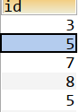
执行完sql之后，a表为：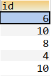
其中sql语句如下：`UPDATE a SET id =
CASEWHEN id <= 6 THEN id * 2 //当符合id小于6的，id都乘以2 WHEN id >= 8 THEN id / 2 //当符合id大于8的，id都除以2 ELSE id+1 //其他，既不小于6，也不大于8的，id加1END`
Lesson4 中级SQL
NO4.1 外链接
SQL有三种形式的外链接。
这三种外链接分别是：
左外链接(left join/left outer join)：简单理解就是，以左表为主，左表所有内容都会出现，右表中只取与左表相连接的部分；
右外链接(right join/right outer join)：以右表为主，右表所有内容都会出现，左表中只取与右表相连接的部分；
全外链接(full outer join)：其实是取两个表的并集，能匹配上的就匹配，不能匹配上的记录也会放入查询结果中，MySQL不支持该功能。
例如：
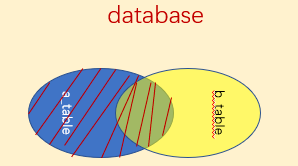
说明：左表的记录将会全部表示出来，而右表只会显示符合搜索条件的记录，右表记录不足的地方均为NULL。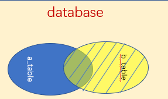
说明：右外连接就是右表全部展示，左表取符合条件的部分，不足的地方用NULL表示。
内连接(inner join)的作用是取两个表的交集，即只取两张表能匹配上的记录放入查询结果中。
例如：
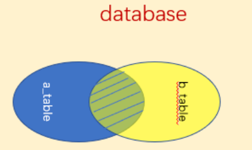
说明：组合两个表中的记录，返回两个表的交集(阴影)部分。
NO4.2 视图
其实视图就是根据SQL语句查询出来的结果集，我们把它变成了一张表而已。
使用CREATE view创建视图。
基本语法格式：
CREATE view 视图名(列名1,列名2....) AS (SELECT 列名 FROM 表名 WHERE 条件) 注意：根据SQL语句查询的结果而创建的视图，如果定义视图的那些记录发生了改变，如增删改，在符合定义视图时的条件下(FROM后面只有一张表，且SELECT中包含了视图的属性名，不能使用任何表达式、聚集函数、DISTINCT、没有NOT NULL约束，也不构成主键的一部分，没有GROUP BY或having。简单的说，就是视图的创建语句，越简单越好)，那么视图中的相关记录信息也会跟着增删改，我们称为物化视图，同样的视图中的数据增删改也会影响原表中的记录，当然前提是符合定义视图时创建的条件；例如：
表a：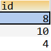
创建视图的SQL语句：CREATE VIEW myview(id) AS SELECT id FROM a WHERE id > 5；创建后的视图为：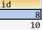
然后往表a中分别添加记录：3、11；添加两条记录后的表a为：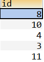
再来看看视图是否有变化：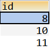
说明：只添加了11，3没有添加进去，因为3不符合创建视图时的定义，即id > 5这个条件；同理往视图中添加记录也是一样，必须符合定义视图的条件才可以影响原表。
NO4.3 事务
SQL标准规定，当一条SQL语句被执行的时候，就隐式的开始了一个事务。结束事务只有两个状态：提交当前事务和回滚事务。
NO4.4 完整性约束
完整性约束可以在创建表的时候添加，或表创建后再添加约束也可以，一般在创建表的时候添加。
除了之前讲过的主键约束、外键约束，还包括以下几种：
NOT NULL约束：即被约束的列不允许空值，也就是必须要有值，一般在创建表时，直接写在字段名称后面就行了；UNIQUE约束：即要求被约束的列的值必须唯一，就是不相同的意思，但可以为NULL，也允许有多个NULL；CHECK约束：用于限制列中的值的范围；如果对单个列定义了CHECK约束，那么该列只允许特定的值，如gender列，只允许“男”和“女”。注意：MySQL中没有实现该功能，虽然有这个关键字，但是无效哦。拓展：约束的延迟检查：即事务中有可能出现：如两条语句，第一条插入的时候违反了约束，第二条符合了约束，这样的情况，有的数据库提供了延迟检查，在事务提交的时候进行检查；目前比较少数据库支持这个功能 一、INITIALLY IMMEDIATE：意味着，当事务开始时，每个SQL语句执行后都必须检查是否违反了约束规则； 二、INITIALLY DEFERRED：意味着，当事务开始后，对约束的检查可以推迟到晚些时候，但不晚于当前事务的结束。
NO4.5 SQL中的日期和时间类型，以及一些数据类型
时间和日期方面的数据类型、函数，都是数据库用的比较多的。
- SQL中日期和时间的数据类型；
- date：日期，包括年月日；如，2019-04-06；
- time：时间，包括时分秒，还可以使用time(n)，其中n表示精确到秒的小数点后面的数字位数；如，09:30:50；
- timestamp：date和time的组合。如，2019-04-03 09:15:29。
- SQL中时间函数；
- current_date：返回当前日期；
- current_time：返回当前时间(带有时区)；
- localtime：返回当前的本地时间(不带时区)。
- 创建表的时候，可以给字段设置默认值，使用格式：default 数据默认值。如果在添加新纪录时，没有给某些列赋值，那么这个默认值就会生效，前提是必须设置了默认值。
- SQL还提供了大对象数据类型(clob)和二进制数据的大对象数据类型(blob)。
- SQL还支持自定义数据类型，一种是独特类型，另一种是结构化数据类型。这里讨论的独特类型：
- CREATE type 自定义数据类型名称 AS 数据类型 final。如，CREATE type Dollars AS numeric(12,2) final，定义了一个Dollars类型，总共有12位数，其中2位用于小数部分；
- DROP type 类型名称；
- ALTER type 类型名称。
- CREATE TABLE的扩展。
- 使用
CREATE TABLE .... LIKE ....，可以创建一个与某个表结构相同的新表，但是，表中是没有数据的。如CREATE TABLE a LIKE b，根据b表创建了一个新表a，两者结构相同(列名、约束等等)，但就是没有数据； - 使用
CREATE TABLE .... AS ....(查询语句) WITH data，就可以创建与某个表相同结构的新表，且还拥有了表数据。MySQL好像不支持这个操作，我自己试了一下。
- 使用
NO4.6 权限
我们有时会给别的用户授予一些权限。
- 一个创建了新表的用户将自动被授予该表的所有权限。
grant <权限列表> on <表名或视图名> TO <用户/角色列表>：授予权限的命令。如，grant SELECT on user(id) TO xiaoming，表示给了xiaoming在user表的id属性上的查询权限；revoke <权限列表> on <表名或视图名> FROM <用户/角色列表>：收回权限的命令。
CREATE ROLE 角色名：创建角色使用该命令，表示给数据库创建一个新的角色。这些角色和用户一样，用户拥有的权限，角色也可以被授予。
grant references on 表名 TO 用户名：给予操作外键的权限。如，grant references (tea_id) on clASs TO xiaoming，表示给予了xiaoming操作clASs表的外键tea_id的权限。
grant 权限名 on 表 TO 用户名 WITH grant option：给予被授权的用户将权限授予其它的用户。
revoke 权限名 on 表名 FROM 用户名 restrict：在大多数数据库系统中，级联是默认的行为，为了防止在收回权限时，产生级联收回，所以使用该命令。
Lesson5 高级SQL
NO5.1 使用程序设计语言访问数据库
JDBC标准定义了一套API(应用程序接口)，这套API是干嘛的呢，就是用于Java程序连接数据库服务器使用的。
创建一个用JDBC连接数据库的程序，包含7个步骤：
加载JDBC驱动程序：在连接数据库之前，首先明白自己想要连接到哪个数据库，然后将想要连接的数据库的驱动，加载到JVM(Java虚拟机)，这通过java.lang.ClASs类的静态方法fORName(String clASsName)实现；成功加载后，会将Driver类的实例注册到DriverManager类中；相当于，先告诉一声某个数据库，让它知道有我们这个人存在；
ClASs.fORName("各个数据库注册驱动的方式不一样，调用的驱动类就不一样"); //加载MySql的驱动类 ClASs.fORName("com.mysql.jdbc.Driver");创建数据库的连接：要连接数据库，需要向java.sql.DriverManager请求并获得Connection对象，Connection对象就代表一个数据库的连接；使用DriverManager的getConnectin(String url, String username, String pASswORd)方法获得连接对象，该方法需要传入三个参数：即想要连接的数据库的路径、数据库的用户名、密码；相当于，来到了指定数据库的门前，要进行身份的验证，然后递上用户名和密码进行检验；
//获取连接对象，该方法需要三个参数url、username、pASswORd Connection con = DriverManager.getConnection(url , username , pASswORd ); //URL：简单理解就是，数据库问你：你要访问哪个数据库，回答是：我想访问URL中的(数据库) jdbc:数据库://ip地址:数据库端口/要连接的数据库名称?useUnicode=true&characterEncoding=utf-8; //MySql的连接URL；其中useUnicode=true表示使用Unicode字符集，characterEncoding=xxx表示字符编码的方式 String url = "jdbc:mysql://localhost:3306/test?useUnicode=true&characterEncoding=utf-8" ; //账户名和密码，可以理解为，你想进这个数据库大门，就需要账户名和密码来验证你 String username = "root" ; String pASswORd = "root" ;进入数据库之后，是不是要搞事情了呢，那么就需要一个能够操作数据库的对象，这就是Statement对象，用于预处理SQL，什么叫预处理呢，简单理解就是你想要做什么，先告诉这个对象，然后由这个对象带着你的要求(就是你写的SQL语句)去操作数据库；创建一个Statement，要执行SQL语句，必须获得java.sql.Statement实例，Statement实例分为三种类型：执行静态SQL语句，通常通过Statement实例实现、执行动态SQL语句，通常通过PreparedStatement实例实现、执行数据库存储过程，通常通过CallableStatement实例实现；获取预处理对象的方式如下：
Statement stmt = con.CREATEStatement(); CallableStatement cstmt = con.prepareCall("{CALL demoSp(? , ?)}"); String sql="INSERT INTOuser VALUES(0,?,?)"; //SQL语句 PreparedStatement pstmt = con.prepareStatement(sql); //推荐用这个，安全性高，可以防止SQL注入，参数sql表示传入你要执行的SQL语句 pstmt.SETXxx(index,value); //设置SQL语句中?的值当prepareStatement准备好SQL语句后，就可以执行了；prepareStatement接口提供了三种执行SQL语句的方法：executeQuery(即ResultSET executeQuery(String sqlString)：执行查询数据库的SQL语句，返回一个结果集ResultSET对象)、executeUPDATE(int executeUPDATE(String sqlString)：用于执行INSERT、UPDATE或DELETE语句以及SQL DDL语句，如：CREATE TABLE和DROP TABLE等)、execute(execute(sqlString)：用于执行返回多个结果集、多个更新计数或二者组合的语句)；具体实现的代码如下：
ResultSET rs = pstmt.executeQuery("SELECT * FROM ..."); int rows = pstmt.executeUPDATE("INSERT INTO..."); boolean flag = pstmt.execute(String sql);处理结果，两种情况：执行更新、删除、添加，返回的是本次操作影响到的记录数；执行查询返回的结果是一个ResultSET对象；
ResultSET包含了，符合SQL语句中条件的所有行，并且它通过一套get方法提供了对这些行中数据的访问，使用结果集ResultSET对象的访问方法获取数据： while(rs.next()){ String name = rs.getString("name"); //通过列名获取值 String pASs = rs.getString(1); //此方法比较高效，列是从左到右编号的，并且从列1开始 }关闭JDBC对象；数据库操作完成以后要把所有使用的JDBC对象全都关闭，以释放JDBC资源，关闭顺序和声明顺序相反：
if(rs != NULL){ //关闭结果集 rs.close(); } if(stmt != NULL){ //关闭SQL预处理对象 stmt.close(); } if(conn != NULL){ //关闭连接对象 conn.close(); }
- ODBC，即Open DatabASe Connectivity，指的是开放数据库连接，是一组对数据库访问的标准API，也就是说，一个基于ODBC的应用程序，对数据库的操作不依赖任何DBMS，不直接与DBMS打交道，所有的数据库操作由对应的DBMS的ODBC驱动程序完成；不论是SQL Server、Access还是ORacle数据库，均可用ODBC API进行访问；由此可见，ODBC的最大优点是能以统一的方式处理所有的数据库；对于ODBC，这里暂时不做深入研究；
- 嵌入式SQL，其实就是指的是将SQL嵌入到高级语言中去使用。平常我们所使用的SQL称为交互式SQL，即一般在DBMS中写入SQL语句，然后点击执行，DBMS根据你的SQL语句，返回给你想要的数据，就是立马能给你响应的，我们就称为交互式SQL。但是用的最多的，却是嵌入式SQL，像开头介绍的JDBC就属于嵌入式SQL，即把SQL语句嵌入到高级语言中，就是这么个意思了。
NO5.2 函数和过程
不同的DBMS对于自定义函数也做了不同程度修改。
自定义函数，简单理解就是我们自己定义一个函数，传入指定类型的参数，并返回指定类型的返回值；函数强调的是返回值，所以一般只返回一个值，不返回多个值。
基本语法格式：
//基本格式 CREATE FUNCTION 函数名称(参数列表) RETURNS 返回值类型 RETURN 函数体 //如果有复合语句，如，SELECT语句、insert语句，就需要使用begin....end CREATE FUNCTION 函数名称(参数列表) RETURNS 返回值类型 begin RETURN (语句体) end 如：(这里以MySQL为例) //创建函数 CREATE FUNCTION stuNameById(stuId INTEGER) RETURNS VARCHAR(45) RETURN(SELECT name FROM tb_student WHERE id=stuId); //调用函数 SELECT stuNameById(1)
- 过程其实和函数差不太多，只是一些方面限制要小一些。
如，函数返回一个值，过程可以返回多个值等等，且过程中使用IN和OUT分别来表示待赋值的参数和返回结果。创建过程使用CREATE procedure....其他和创建函数大同小异；
NO5.3 触发器
触发器是一条语句。
当对数据库作修改时，触发器会自动被系统执行；
基本语法格式：
CREATE TRIGGER 触发器名 BEFORE|AFTER 触发事件 ON 表名 [FOR EACH ROW] [begin] 执行语句 [end] //方括号表示可选 说明：BEFORE和AFTER表示触发器是在触发事件之前触发还是之后触发；触发事件包括：UPDATE、insert、delete；FOR EACH ROW表示对每一行；new：当触发插入和更新事件时可用，指向的是被操作的记录；old：当触发删除和更新事件时可用，指向的是被操作的记录。
Lesson6 形式化关系查询语言
NO6.1 关系代数
关系代数是一种过程化查询语言。
- 关系代数包括一个运算的集合，这些运算以一个或两个表为输入，产生一个新的表作为结果。关系代数包括：
- 传统的集合运算包括并、交、差、笛卡尔积；
- 专门的关系运算包括选择、投影、连接、除。
- 传统的集合运算包括并、交、差、笛卡尔积。
- 并运算：简单理解就是把两张表的所有记录都集合成一个表，完全相同的记录只出现一条。
如，SELECT name FROM student WHERE chinese_scORe > 60 union SELECT name FROM student WHERE math_scORe > 70，表示将student表中语文趁机大于60分的学生或者数学成绩大于70分的学生的名字全都找出来，这就是并运算； - 交运算：其实就是取两张表都有的记录，取出来组成一张新的表；
- 差运算：通俗的讲，A和B两张表，A-B就是将属于表A但不属于表B的元素取出来，反之B-A，就是将属于表B但不属于表A的元素取出来，这就是差运算；
- 笛卡尔积：就是把表A的每一条记录与表B的每一条记录作匹配，即表A的记录乘以表B的记录=笛卡尔积。
- 并运算：简单理解就是把两张表的所有记录都集合成一个表，完全相同的记录只出现一条。
专门的关系运算包括选择、投影、连接、除。
选择运算：简单的理解，选择是对表中的记录，也就是表的一行进行操作。
如，SELECT * FROM student WHERE scORe > 60，表示将student表中scORe大于60分的学生记录全部找出来，即一个学生的全部信息，这就是选择操作；投影运算：这个也比较简单，投影是对表中的列进行操作。
如，SELECT name FROM student WHERE scORe > 60，表示将student表中scORe大于60分的学生的姓名全部找出来，这里我只要求姓名，并没有要求一个学生的所有信息，这就是投影操作；连接运算：即在笛卡尔积的基础上，取出满足条件的记录组成一张新表。
如，SELECT * FROM student,teacher WHERE student.id = teacher.id，表示取出学生id和老师id相等的记录；除运算：简单理解，A和B两张表，A/B就是，在A中找出符合B所有属性的记录。
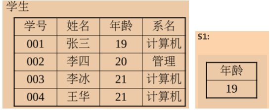
那么学生/s1，结果为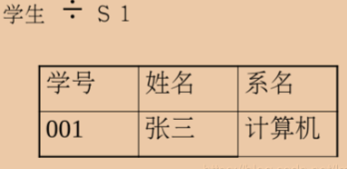
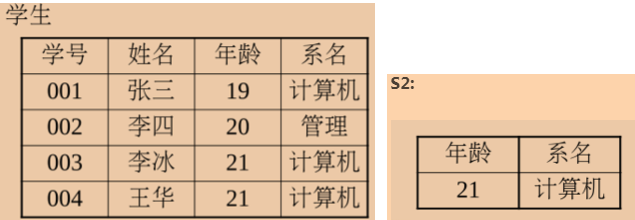
那么学生/s2，结果为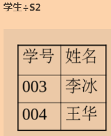
- 更名运算：其实就是为表或者列，创建一个别名，和数据库的AS功能一样；如，SELECT s.name FROM student AS s中将表student取了一个别名为s。
Lesson7 数据库设计和E-R模型
NO7.1 实体-联系模型
实体-联系模型的提出旨在方便数据库的设计。
- 实体-联系(E-R)数据模型：该数据模型基于对现实世界的这样一种认识，即世界由一组称为实体的基本对象以及这些对象间的联系组成。简单理解就是将现实世界映射到数据库，数据库的一条记录就是一个基本对象。E-R数据模型采用了三个基本概念：
- 实体：实体是客观存在并且可以互相区分的事物，可以是人或物，也可以是抽象的概念。在现实世界，实体并不是孤立存在的，实体与实体之间也存在联系，
如，课程与学生之间存在学生学习课程的联系，课程与老师之间存在老师教授课程的联系等等； - 联系：实体不是孤立存在的，实体之间是有联系的。实体之间的联系可以分为三类：一对一(1:1)、一对多(1:n)和多对多(m:n)。
如，一个老师可以教授多个课程，老师与课程的联系就是一对多的关系等等； - 属性：每个实体具有的特征称为属性，一个实体可以由若干个属性来描述。
如，课程实体可以由课程编号、课程名称、授课老师等属性组成。属性都有其取值范围，称为值集或值域。唯一地标识实体的属性或属性组称为实体的关键字。如，属性值“20180603、Java编程基础、郎老师”，其中20180603是课程编号的属性值，该编号在在所有的课程实体中是唯一的，该属性就是课程实体的关键字。
- 实体：实体是客观存在并且可以互相区分的事物，可以是人或物，也可以是抽象的概念。在现实世界，实体并不是孤立存在的，实体与实体之间也存在联系，
NO7.2 E-R图
E-R图其实就是E-R模型的图形化表示。
E-R图主要有以下几种表示：
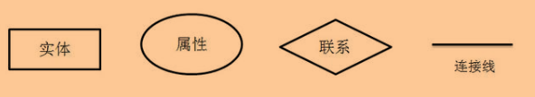
例如：
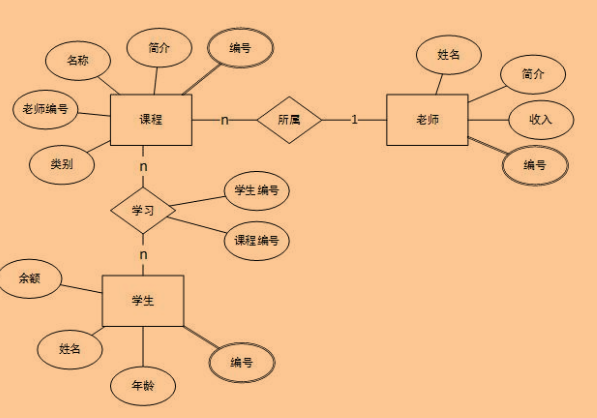
E-R图给出了实体联系模型的图形化描述，增强了开发人员与客户的沟通能力。到了设计阶段，就需要在概念模型的基础上建立关系模型，关系模型是用二维表来表示实体集、属性以及联系的一种形式化模型。如下所示：
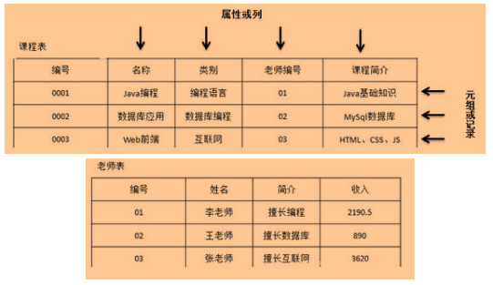
NO7.3 统一建模语言UML
- UML作为一种模型语言，它使开发人员专注于建立产品的模型和结构，而不是选用什么程序语言和算法实现。主要是用来做软件蓝图。UML的核心是图表。大致可以将这些图归类为两种：
- 静态视图，其下分为：用例图，类图，对象图，构件图，部署图；
- 动态视图，其下又分为：状态图，活动图，协作图，序列图。
Lesson8 关系数据库的设计
NO8.1 数据库的三范式
在关系型数据库中，我们把设计数据库的规范称为范式。
- 常用的三范式：
- 第一范式(1NF)：强调的是列的原子性，即列不能够再分成其他几列；
- 第二范式(2NF)：首先要符合1NF，其次需要包含两部分内容，一是表必须有一个主键；二是没有包含在主键中的列必须完全依赖于主键，而不能只依赖于主键的一部分；
- 第三范式(3NF)：首先要符合2NF，其次非主键列必须直接依赖于主键，不能存在传递依赖，即不能存在：非主键列A依赖于非主键列B，非主键列B依赖于主键的情况。
如，表中有id、name、course_id、course_name四个列，id为主键，其他列都依赖这个主键来区分不同的记录，符合2NF，但是course_name却直接依赖的是course_id，而不是id，所以不符合3NF。
- 第二范式和第三范式的概念很容易混淆，区分它们的关键点在于，2NF：非主键列是否完全依赖于主键，还是依赖于主键的一部分；3NF：非主键列是直接依赖于主键，还是直接依赖于非主键列。
Lesson9 应用设计和开发
关于Servlet和JSP、以及连接数据库，Java中已学习过，不再费时间学习
Lesson10 存储和文件结构
这一章在这里不做学习，学习的性价比暂时不高
Lesson11 索引与散列
这一章在这里不做学习，接触不同数据库时再进行学习
Lesson12 查询处理
这一章在这里不做学习，接触不同数据库时再进行学习
Lesson13 查询优化
这一章在这里不做学习，接触不同数据库时再进行学习
Lesson14 事务
Java中已学习过，不再费时间学习
Lesson15 并发控制
这一章在这里不做学习，接触不同数据库时再进行学习
Lesson16 恢复系统
这一章在这里不做学习，学习的性价比暂时不高
Lesson17 数据库系统体系结构
这一章在这里不做学习，学习的性价比暂时不高
Lesson18 并行数据库
这一章在这里不做学习，学习的性价比暂时不高
Lesson19 分布式数据库
这一章在这里不做学习，学习的性价比暂时不高
Lesson20 数据仓库与数据挖掘
这一章在这里不做学习，学习的性价比暂时不高
Lesson21 信息检索
这一章在这里不做学习，学习的性价比暂时不高
Lesson22 基于对象的数据库
这一章在这里不做学习，学习的性价比暂时不高
Lesson23 XML
这一章在这里不做学习，学习的性价比暂时不高
Lesson24 高级应用开发
这一章在这里不做学习，学习的性价比暂时不高
Lesson25 时空数据和移动性
这一章在这里不做学习，学习的性价比暂时不高
Lesson26 高级事务处理
这一章在这里不做学习，学习的性价比暂时不高
Lesson27 PostgreSQL
这一章在这里不做学习，会单独作为一门课程学习
Lesson28 ORacle
这一章在这里不做学习，会单独作为一门课程学习
Lesson29 DB2
这一章在这里不做学习，会单独作为一门课程学习
Lesson30 SQL Server
这一章在这里不做学习，会单独作为一门课程学习
本博客所有文章除特别声明外，均采用 CC BY-SA 4.0 协议 ，转载请注明出处！